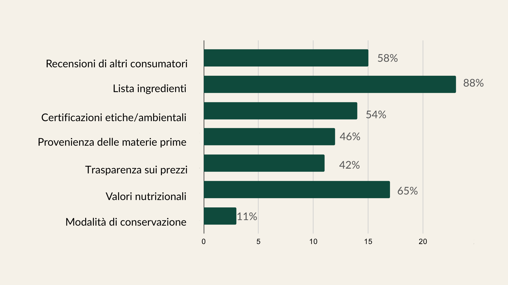
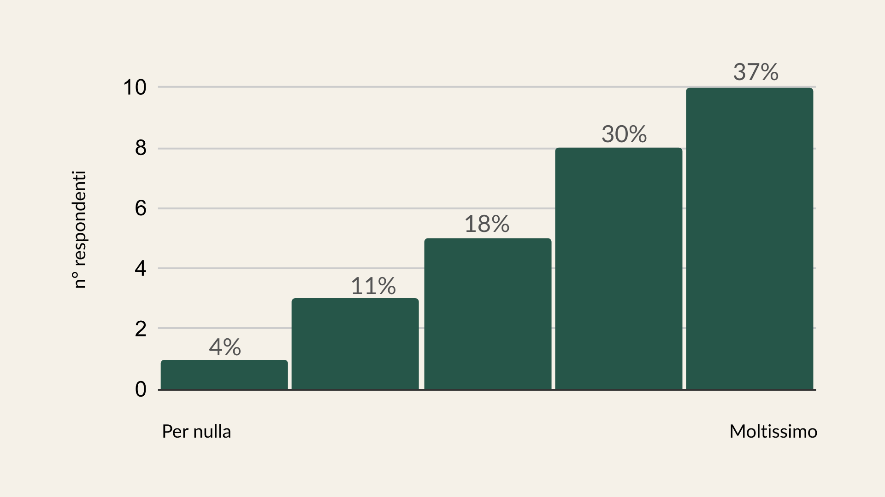

Visibility of system status
- Product availability is not always clear.
- Free-shipping information is difficult to find.
- Cart status is not always visible in the app.
DISCOVERY 01 · AS-IS ANALYSIS AND COMPETITORS
Before starting the redesign, the iVegan site was analysed to understand where the experience was unclear, inconsistent or difficult to navigate.
The research combined heuristic analysis, the 3Cs of design, a visual sitemap, competitor benchmarking and a survey with target users.
FROM ANALYSIS TO PAIN POINTS
01 · HEURISTIC ANALYSIS
The site was analysed through Jakob Nielsen’s 10 usability principles across desktop, tablet, mobile and app.
The analysis identified elements that were already effective, such as system feedback and filter options, as well as recurring pain points: unintuitive categories, important information that was difficult to see, inconsistent interactions and journeys that required too much effort to understand.
02 · 3Cs OF DESIGN
Reading the experience through the 3Cs summarised the pain points in three areas: communication clarity, content organisation and interface consistency.
The as-is visual sitemap then made the fragmented structure visible, revealing redundancies, non-linear paths and content that was difficult to reach.
3Cs OF DESIGN
Terminology and paths are not always immediately understandable.
Important information is fragmented across different sections.
Different patterns and behaviours between the site and app.
VISUAL SITEMAP · AS-IS
Multiple paths and levels made some information difficult to reach.
03 · COMPETITOR ANALYSIS
The benchmark compared iVegan with direct competitors specialising in the vegan market, examining site structure, account and cart, product boxes and key trust factors.
The comparison showed generally more consistent and complete experiences, particularly in cart management, product-page consistency and communication of shopping information.
COMPETITOR BENCHMARK
Recurring patterns observed when comparing specialist e-commerce sites.
Hierarchy and categories are not always immediately understandable.
Clearer, more recognisable and predictable categories.
Product information and states are inconsistent.
More consistent and complete product pages.
Quantity, price and next actions are difficult to identify.
Key information and controls are always visible.
Useful shopping information is spread across multiple places.
Reviews and shopping information are more visible and accessible.
04 · TARGET & SURVEY
The target audience was explored through demographic and sociographic data and then validated with a survey of vegan and vegetarian people aged 18 to 35.
The questionnaire explored online shopping, product availability, transparency, trust and the main frustrations in the shopping process.
Which information do you find most useful on an online vegan/vegetarian shopping platform? (you can choose multiple options)

How interested are you in knowing which country products come from and in which country they are processed?

KEY INSIGHT
Product origin and processing, certifications, reviews, prices and shipping must be immediately understandable. At the same time, navigation and access should require as little effort as possible.
FROM RESEARCH TO DESIGN